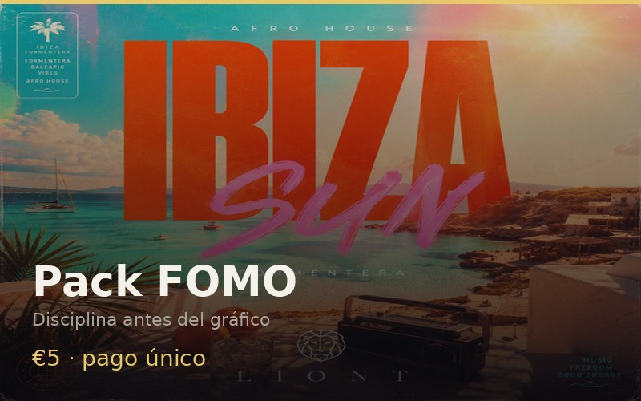

Starter · disciplina Más elegido
Pack FOMO — checklist crypto y plantilla de diario de trading
€5
pago único
Para cuando el FOMO (miedo a quedarte fuera) empuja a comprar sin plan. Tres piezas simples que escribes antes de mirar el gráfico — no señales, no tipster.
-
Checklist antes de entrar Condiciones mínimas antes de abrir una posición.
-
Reglas de tamaño de posición Porcentaje máximo de capital por operación — escrito, no “a ojo”.
-
Plantilla de diario de trading (journal) Registro corto: por qué entraste, qué pasó, qué aprendes.
Formato digital (PDF/MD). Uso personal. Educación: no es consejo de inversión ni promesa de resultados.
Comprar Pack FOMO · €5Stripe Checkout seguro. Tras el pago, entrega por email.